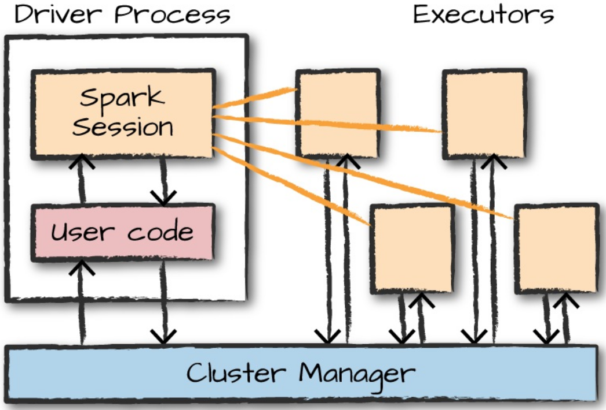
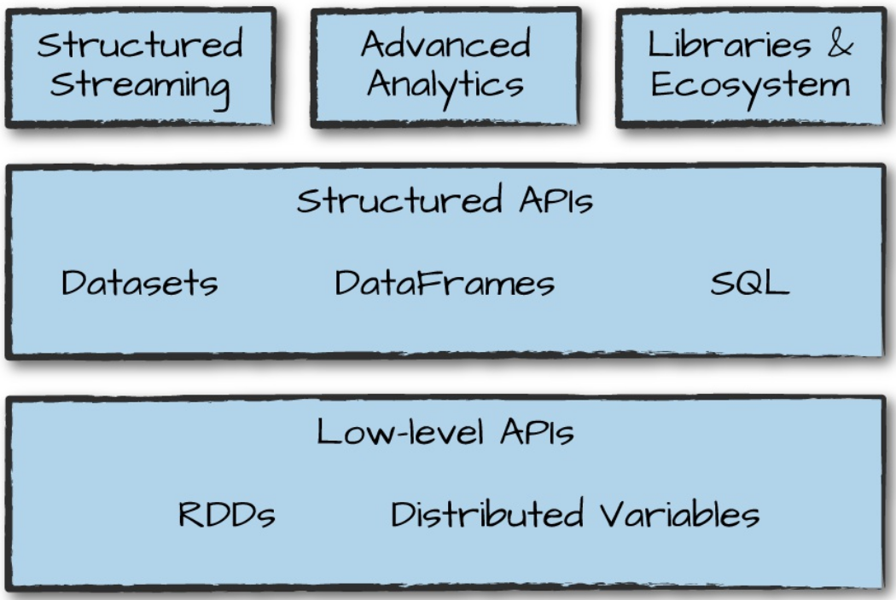
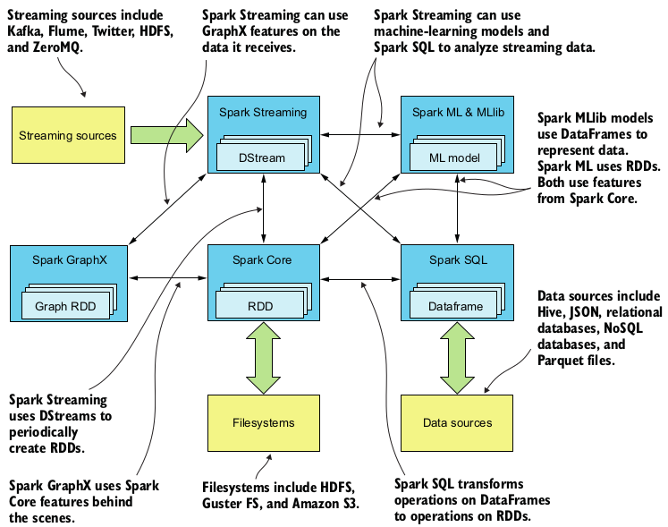

class: title, self-paced Introduction to Apache Spark<br/> .nav[*Self-paced version*] .debug[ ``` M common/about-slides_fr.md M intro-fullday.yml.html M intro-selfpaced.yml.html M kube-fullday.yml.html M kube-halfday.yml.html M kube-jour1.yml.html M kube-jour2.yml.html M kube-jour3.yml M kube-jour3.yml.html M kube-selfpaced.yml.html M logistics.md M spark-day1.yml.html M swarm-fullday.yml.html M swarm-halfday.yml.html M swarm-selfpaced.yml.html M swarm-video.yml.html ?? spark-day1.yml ?? spark-day2.yml ?? spark-day2.yml.html ?? spark-day3.yml ?? spark-day3.yml.html ?? spark-jour1.yml.html ?? spark/ ``` These slides have been built from commit: 8fb8bc6 [common/title_fr.md](https://github.com/RyaxTech/kube.training.git/tree/gh-pages//common/title_fr.md)] --- class: title, in-person Introduction to Apache Spark<br/><br/></br> .debug[[common/title_fr.md](https://github.com/RyaxTech/kube.training.git/tree/gh-pages//common/title_fr.md)] --- ## Some infos about the instructor - Yiannis Georgiou - CTO Ryax Technologies - PhD Université Grenoble-Alpes - Resource Management and Scheduling on High Performance Computing - 11 ans à Bull/Atos Technologies - R&D Software Engineer R&D / Architect .debug[[spark/logistics_spark.md](https://github.com/RyaxTech/kube.training.git/tree/gh-pages//spark/logistics_spark.md)] --- ## Logistics - The training will take place from 9h until 17h30 - There will be a break for lunch from 12h30 to 14h - Feel free to interrupt for questions at any time - Especially when you see full screen container pictures! .debug[[spark/logistics_spark.md](https://github.com/RyaxTech/kube.training.git/tree/gh-pages//spark/logistics_spark.md)] --- ## The slides of the training - The template is based on the slides done by [Jérôme Petazzoni](https://twitter.com/jpetazzo) to support workshops and tutorials upon Containers and Kubernetes. - The content presented on the training follows the curriculum of the following two books for Apache Spark: - Spark in Action by Petar Zečević and Marko Bonaći from Manning that you can buy [here](https://www.manning.com/books/spark-in-action) - Spark: The Definitive Guide Big Data Processing Made Simple By Matei Zaharia, Bill Chambers from Publisher: O'Reilly Media that you can buy [here](http://shop.oreilly.com/product/0636920034957.do) - Some of the images and some of the exercises have also been taken from those books. * Besides the training: * If you want to read more about Apache Spark along with the latest updates you can read the [official documentation](https://spark.apache.org/documentation.html) from Apache. * If you have particular questions you can check for answers or ask yourself in [StackOverflow](https://stackoverflow.com/questions/tagged/apache-spark) .debug[[spark/about-slides_spark.md](https://github.com/RyaxTech/kube.training.git/tree/gh-pages//spark/about-slides_spark.md)] --- name: toc-chapter-1 ## Chapter 1 - [Spark overview](#toc-spark-overview) - [History of Spark](#toc-history-of-spark) - [Spark Architecture](#toc-spark-architecture) - [Spark Components](#toc-spark-components) - [Pre-requirements](#toc-pre-requirements) - [Spark's interactive consoles](#toc-sparks-interactive-consoles) .debug[(auto-generated TOC)] --- name: toc-chapter-2 ## Chapter 2 - [Structured APIs: Dataframes, SQL and Datasets](#toc-structured-apis-dataframes-sql-and-datasets) - [Dataframes](#toc-dataframes) - [Fundamental DataFrame operations](#toc-fundamental-dataframe-operations) - [Aggregations](#toc-aggregations) - [Data Sources and Data Sources API](#toc-data-sources-and-data-sources-api) - [Spark DataFrames: Exercise Exploring Chicago Crimes](#toc-spark-dataframes-exercise-exploring-chicago-crimes) - [Spark SQL ](#toc-spark-sql-) - [Datasets](#toc-datasets) .debug[(auto-generated TOC)] --- name: toc-chapter-3 ## Chapter 3 - [Writing Spark applications ](#toc-writing-spark-applications-) - [Creating a new Intellij project for Java application](#toc-creating-a-new-intellij-project-for-java-application) - [Creating a new PyCharm project for Python Spark application](#toc-creating-a-new-pycharm-project-for-python-spark-application) .debug[(auto-generated TOC)] .debug[[common/toc.md](https://github.com/RyaxTech/kube.training.git/tree/gh-pages//common/toc.md)] --- class: pic .interstitial[] --- name: toc-spark-overview class: title Spark overview .nav[ [Section précédente](#toc-) | [Retour table des matières](#toc-chapter-1) | [Section suivante](#toc-history-of-spark) ] .debug[(automatically generated title slide)] --- # Spark overview * Apache Spark is a **unified computing engine** and a set of **libraries** for parallel data processing on computer clusters. * Spark is the most actively developed open source engine for this task, making it a standard tool for any developer, data engineer or data scientist interested in big data. * Spark features: * It supports multiple widely used programming languages (Python, Java, Scala, and R), * it includes libraries for diverse tasks ranging from SQL to streaming and machine learning, * and it runs anywhere from a laptop to a cluster of thousands of servers. .debug[[spark/Spark_Overview.md](https://github.com/RyaxTech/kube.training.git/tree/gh-pages//spark/Spark_Overview.md)] --- ## Apache Spark's Philosophy * **Unified**: * Spark provides consistent, *composable APIs* to build applications out of smaller pieces or out of existing libraries. * Also designed to enable *high performance* by optimizing across the different libraries and functions. * **Computing Engine**: * Spark focuses on performing *computations over the data*, no matter where it resides. * Spark handles loading data from storage systems and computing on it, it does *not provide means for permanent storage*. * **Libraries**: * It is through them that Spark provides a unified API for *common data analysis tasks*. * Spark includes libraries such as SQL and structured data (Spark SQL), machine learning (MLlib), stream processing (Spark Streaming), and graph analytics (GraphX) .debug[[spark/Spark_Overview.md](https://github.com/RyaxTech/kube.training.git/tree/gh-pages//spark/Spark_Overview.md)] --- ## The Big Data Problem *Why do we need a new engine and programming model for data analytics in the first place?* * Increasing computing power made applications faster upto 2005. * Since 2005 hardware vendors stopped making individual processors faster and switched towards adding more parallel CPU cores all running at the same speed. * Applications needed to be modified to add *parallelism* in order to run faster, opening the way for *new programming models* such as Apache Spark. * Technologies for storing and collecting data continue to drop in cost and improve in performance. * Cameras are themselves the key sensors in other data collection devices, such as telescopes and even gene-sequencing machine, driving their cost down as well. * Under this context Apache Spark was built to cover the needs to develop and execute Big Data applications using parallel processing upon multiple machines. .debug[[spark/Spark_Overview.md](https://github.com/RyaxTech/kube.training.git/tree/gh-pages//spark/Spark_Overview.md)] --- class: pic .interstitial[] --- name: toc-history-of-spark class: title History of Spark .nav[ [Section précédente](#toc-spark-overview) | [Retour table des matières](#toc-chapter-1) | [Section suivante](#toc-spark-architecture) ] .debug[(automatically generated title slide)] --- # History of Spark * Apache Spark began at AMPLab of UC Berkeley in 2009 as the Spark research project, which was first published the following year in a paper entitled [“Spark: Cluster Computing with Working Sets”](https://www.usenix.org/legacy/event/hotcloud10/tech/full_papers/Zaharia.pdf) * That period, Hadoop MapReduce was the most used parallel programming engine for clusters, which enabled data-parallel processing on multiple-nodes clusters. * Limitations and performance issues of MapReduce enabled the first versions of Spark as an API for multistep applications and an engine for in-memory data-sharing across computation steps. * Initially only batch applications were supported but eventually the interactive system for running queries and SQL on hundreds of machines was developed. .debug[[spark/Spark_Overview.md](https://github.com/RyaxTech/kube.training.git/tree/gh-pages//spark/Spark_Overview.md)] --- ## History of Spark * In 2013 Spark started to become widely known and becoming a defacto standard for large-scale data processing taking Hadoop place. * The community made progress in adding the support of new APIs such as Spark SQL and Dataframes along with new libraries such as MLlib, Spark Streaming, etc. * Apache Spark released v1.0 in 2014 and v2.0 in 2016. * The initial AMPLab team of Spark founded a company called Databricks for professional support and cloud services offerings. They are the main developers of the project. * Last week the v2.3.2 was released. and we will be using that version in our exercises. .debug[[spark/Spark_Overview.md](https://github.com/RyaxTech/kube.training.git/tree/gh-pages//spark/Spark_Overview.md)] --- ## Mapreduce's Shortcomings * Hadoop Mapreduce is the foundation of today’s big data revolution and still actively used and maintained. * However, MapReduce is not good for iterative algorithms, job results need to be stored in HDFS before they can be used by another job. * Decomposing every problem into a series of two operations Map/Reduce can be difficult. * Hadoop is rather low-level so plenty of tools have been developed around it and the whole ecosystem became too complex. .debug[[spark/Spark_Overview.md](https://github.com/RyaxTech/kube.training.git/tree/gh-pages//spark/Spark_Overview.md)] --- ## What Spark brings to the table - Spark’s core concept is an in-memory execution model that enables caching job data in memory instead of fetching it from disk every time, as MapReduce does. - This can speed the execution of jobs up to 100 times, compared to the same jobs in Map-Reduce; it has the biggest effect on iterative algorithms such as machine learning, graph algorithms, and other types of workloads that need to reuse data. .debug[[spark/Spark_Overview.md](https://github.com/RyaxTech/kube.training.git/tree/gh-pages//spark/Spark_Overview.md)] --- ## Spark's ease of Use * The Spark API is much easier to use than the classic MapReduce API. * To implement the classic word-count example as a MapReduce job, you’d need three classes: the main class that sets up the job, a Mapper, and a Reducer , each around 10 lines of code. * In Spark it can take around 5 lines in total. .debug[[spark/Spark_Overview.md](https://github.com/RyaxTech/kube.training.git/tree/gh-pages//spark/Spark_Overview.md)] --- class: pic ## Spark's conciseness and simplicity  .debug[[spark/Spark_Overview.md](https://github.com/RyaxTech/kube.training.git/tree/gh-pages//spark/Spark_Overview.md)] --- ## Spark in production * Spark technology allows companies solving massive-scale data challenges simpler and more efficiently * Technology companies like Uber and Netflix using Spark’s streaming and machine learning tools * Institutions like NASA, CERN, and the Broad Institute of MIT and Harvard applyi Spark to scientific data analysis. .debug[[spark/Spark_Overview.md](https://github.com/RyaxTech/kube.training.git/tree/gh-pages//spark/Spark_Overview.md)] --- class: pic .interstitial[] --- name: toc-spark-architecture class: title Spark Architecture .nav[ [Section précédente](#toc-history-of-spark) | [Retour table des matières](#toc-chapter-1) | [Section suivante](#toc-spark-components) ] .debug[(automatically generated title slide)] --- # Spark Architecture * Single machine VS multiple machines for data processing. * Single machines do not have enough power and resources to perform computations on huge amounts of information (or the user probably does not have the time to wait for the computation to finish). * A cluster, or group, of computers, pools the resources of many machines together, giving us the ability to use all the cumulative resources as if they were a single computer. * Now, a group of machines alone is not powerful, you need a framework to coordinate work across them. * Spark does just that, managing and coordinating the execution of tasks on data across a cluster of computers. .debug[[spark/Spark_Overview.md](https://github.com/RyaxTech/kube.training.git/tree/gh-pages//spark/Spark_Overview.md)] --- class: pic ## Spark Architecture  .debug[[spark/Spark_Overview.md](https://github.com/RyaxTech/kube.training.git/tree/gh-pages//spark/Spark_Overview.md)] --- ## Spark's cluster management * The cluster of machines that Spark will use to execute tasks is managed by a cluster manager like Spark’s standalone cluster manager, YARN, or Mesos. * We then submit Spark Applications to these cluster managers, which will grant resources to our application so that we can complete our work. .debug[[spark/Spark_Overview.md](https://github.com/RyaxTech/kube.training.git/tree/gh-pages//spark/Spark_Overview.md)] --- ## Spark applications * Spark Applications consist of: * a driver process * and a set of executor processes. * The driver process runs your main() function, sits on a node in the cluster, and is responsible for three things: * maintaining information about the Spark Application; * responding to a user’s program or input; * and analyzing, distributing, and scheduling work across the executors (discussed momentarily). * The executors are responsible for actually carrying out the work that the driver assigns them. This means that each executor is responsible for only two things: * executing code assigned to it by the driver, * and reporting the state of the computation on that executor back to the driver node. .debug[[spark/Spark_Overview.md](https://github.com/RyaxTech/kube.training.git/tree/gh-pages//spark/Spark_Overview.md)] --- class: pic ## Architecture of Spark application  .debug[[spark/Spark_Overview.md](https://github.com/RyaxTech/kube.training.git/tree/gh-pages//spark/Spark_Overview.md)] --- ## Spark Applications key takeaways * Spark employs a cluster manager that keeps track of the resources available. * The driver process is responsible for executing the driver program’s commands across the executors to complete a given task. * The executors, for the most part, will always be running Spark code. * However, the driver can be “driven” from a number of different languages through Spark’s language APIs. .debug[[spark/Spark_Overview.md](https://github.com/RyaxTech/kube.training.git/tree/gh-pages//spark/Spark_Overview.md)] --- ## Spark's Language APIs * Spark’s language APIs make it possible for you to run Spark code using various programming languages. * For the most part, Spark presents some core “concepts” in every language; these concepts are then translated into Spark code that runs on the cluster of machines. * If you use just the Structured APIs, you can expect all languages to have similar performance characteristics. .debug[[spark/Spark_Overview.md](https://github.com/RyaxTech/kube.training.git/tree/gh-pages//spark/Spark_Overview.md)] --- ## Spark's Language APIs * Scala : Spark is primarily written in Scala, making it Spark’s “default” language. * Java: Even though Spark is written in Scala, Spark’s authors have been careful to ensure that you can write Spark code in Java. * Python: It supports nearly all constructs that Scala supports. * SQL: Spark supports a subset of the ANSI SQL 2003 standard. This makes it easy for analysts and non-programmers to take advantage of the big data powers of Spark. * R: Spark has two commonly used R libraries: one as a part of Spark core (SparkR) and another as an R community-driven package (sparklyr). .debug[[spark/Spark_Overview.md](https://github.com/RyaxTech/kube.training.git/tree/gh-pages//spark/Spark_Overview.md)] --- ## SparkSession and Language APIs * Each language API maintains the same core concepts. * There is a SparkSession object available to the user, which is the entrance point to running Spark code. * When using Spark from Python or R, you don’t write explicit JVM instructions; instead, you write Python and R code that Spark translates into code that it then can run on the executor JVMs. .debug[[spark/Spark_Overview.md](https://github.com/RyaxTech/kube.training.git/tree/gh-pages//spark/Spark_Overview.md)] --- class: pic ## SparkSession and Language APIs relationship  .debug[[spark/Spark_Overview.md](https://github.com/RyaxTech/kube.training.git/tree/gh-pages//spark/Spark_Overview.md)] --- class: pic .interstitial[] --- name: toc-spark-components class: title Spark Components .nav[ [Section précédente](#toc-spark-architecture) | [Retour table des matières](#toc-chapter-1) | [Section suivante](#toc-pre-requirements) ] .debug[(automatically generated title slide)] --- # Spark Components * Spark has a vast ecosystem of tools and libraries. * It is composed of: * the lower-level APIs * the Structured APIs * and a series of standard libraries for additional functionality. * Spark consists of several purpose-built components such as Spark Core, Spark SQL , Spark Streaming, Spark GraphX, and Spark ML lib * These components make Spark a feature-packed unifying platform: it can be used for many tasks that previously had to be accomplished with several different frameworks. .debug[[spark/Spark_Overview.md](https://github.com/RyaxTech/kube.training.git/tree/gh-pages//spark/Spark_Overview.md)] --- class: pic ## Spark's toolset  .debug[[spark/Spark_Overview.md](https://github.com/RyaxTech/kube.training.git/tree/gh-pages//spark/Spark_Overview.md)] --- ## Spark Core * Spark Core contains basic Spark functionalities required for running jobs and needed by other components. The most important of these is the resilient distributed dataset (RDD), which is the main element of the Spark API. It’s an abstraction of a distributed collection of items with operations and transformations applicable to the dataset. It’s resilient because it’s capable of rebuilding datasets in case of node failures. * Spark Core contains logic for accessing various filesystems, such as HDFS , Gluster FS , Amazon S3, and so on. It also provides a means of information sharing between computing nodes with broadcast variables and accumulators. Other fundamental functions, such as networking, security, scheduling, and data shuffling, are also part of Spark Core. .debug[[spark/Spark_Overview.md](https://github.com/RyaxTech/kube.training.git/tree/gh-pages//spark/Spark_Overview.md)] --- class: pic ## Spark Components and various runtime interactions  .debug[[spark/Spark_Overview.md](https://github.com/RyaxTech/kube.training.git/tree/gh-pages//spark/Spark_Overview.md)] --- ## Spark SQL * Spark SQL provides functions for manipulating large sets of distributed, structured data using an SQL subset supported by Spark and Hive SQL (Hive QL ). * With DataFrames introduced in Spark 1.3, and DataSets introduced in Spark 1.6, which simplified handling of structured data and enabled radical performance optimizations, Spark SQL became one of the most important Spark components. * Spark SQL can also be used for reading and writing data to and from various structured formats and data sources, such as JavaScript Object Notation ( JSON ) files, Parquet files (an increasingly popular file format that allows for storing a schema along with the data), relational databases, Hive, and others. * Operations on DataFrames and DataSets at some point translate to operations on RDDs and execute as ordinary Spark jobs. Spark SQL provides a query optimization framework called Catalyst that can be extended by custom optimization rules. Spark SQL also includes a Thrift server, which can be used by external systems, such as business intelligence tools, to query data through Spark SQL using classic JDBC and ODBC protocols. .debug[[spark/Spark_Overview.md](https://github.com/RyaxTech/kube.training.git/tree/gh-pages//spark/Spark_Overview.md)] --- ## Spark Streaming * Spark Streaming is a framework for ingesting real-time streaming data from various sources. The supported streaming sources include HDFS , Kafka, Flume, Twitter, ZeroMQ , and custom ones. * Spark Streaming operations recover from failure automatically, which is important for online data processing. Spark Streaming represents streaming data using discretized streams ( DS treams), which periodically create RDDs containing the data that came in during the last time window. * Spark Streaming can be combined with other Spark components in a single program, unifying real-time processing with machine learning, SQL , and graph operations. This is something unique in the Hadoop ecosystem. And since Spark 2.0, the new Structured Streaming API makes Spark streaming programs more similar to Spark batch programs. .debug[[spark/Spark_Overview.md](https://github.com/RyaxTech/kube.training.git/tree/gh-pages//spark/Spark_Overview.md)] --- ## Spark MLlib and GraphX * Spark MLlib is a library of machine-learning algorithms grown from the ML base project at UC Berkeley. Supported algorithms include logistic regression, naïve Bayes classification, support vector machines ( SVM s), decision trees, random forests, linear regression, and k-means clustering. * Graphs are data structures comprising vertices and the edges connecting them. GraphX provides functions for building graphs, represented as graph RDDs: EdgeRDD and VertexRDD . .debug[[spark/Spark_Overview.md](https://github.com/RyaxTech/kube.training.git/tree/gh-pages//spark/Spark_Overview.md)] --- class: pic ## Spark vs Hadoop Ecosystem  .debug[[spark/Spark_Overview.md](https://github.com/RyaxTech/kube.training.git/tree/gh-pages//spark/Spark_Overview.md)] --- class: pic .interstitial[] --- name: toc-pre-requirements class: title Pre-requirements .nav[ [Section précédente](#toc-spark-components) | [Retour table des matières](#toc-chapter-1) | [Section suivante](#toc-sparks-interactive-consoles) ] .debug[(automatically generated title slide)] --- # Pre-requirements - Be comfortable with the UNIX command line - navigating directories - editing files .debug[[spark/prereqs.md](https://github.com/RyaxTech/kube.training.git/tree/gh-pages//spark/prereqs.md)] --- class: title *Tell me and I forget.* <br/> *Teach me and I remember.* <br/> *Involve me and I learn.* Misattributed to Benjamin Franklin [(Probably inspired by Chinese Confucian philosopher Xunzi)](https://www.barrypopik.com/index.php/new_york_city/entry/tell_me_and_i_forget_teach_me_and_i_may_remember_involve_me_and_i_will_lear/) .debug[[spark/prereqs.md](https://github.com/RyaxTech/kube.training.git/tree/gh-pages//spark/prereqs.md)] --- ## Hands-on sections - The whole training is based on hands-on - We are going to use Spark, build applications upon it, build clusters of Spark and use hosted services of Spark! - You are invited to reproduce all the demos - All hands-on sections are clearly identified, like the gray rectangle below .exercise[ - This is the stuff you're supposed to do! - Go to [spark.training](https://ryaxtech.github.io/kube.training/) to view these slides ] .debug[[spark/prereqs.md](https://github.com/RyaxTech/kube.training.git/tree/gh-pages//spark/prereqs.md)] --- class: in-person ## Where are we going to use and run Spark? .debug[[spark/prereqs.md](https://github.com/RyaxTech/kube.training.git/tree/gh-pages//spark/prereqs.md)] --- class: in-person, pic  .debug[[spark/prereqs.md](https://github.com/RyaxTech/kube.training.git/tree/gh-pages//spark/prereqs.md)] --- class: in-person ## You get a cluster of cloud VMs - Each person gets a private cluster of cloud VMs (not shared with anybody else) - They'll remain up for the duration of the workshop - You can automatically SSH from one VM to another - The nodes have aliases: `asterix1`, `asterix2`, etc. - All you need is a computer (or even a phone or tablet!), with: - an internet connection - a web browser - an SSH client .debug[[spark/prereqs.md](https://github.com/RyaxTech/kube.training.git/tree/gh-pages//spark/prereqs.md)] --- class: in-person ## SSH clients - On Linux, OS X, FreeBSD... you are probably all set - On Windows, get this: - [putty](http://www.putty.org/) .debug[[spark/prereqs.md](https://github.com/RyaxTech/kube.training.git/tree/gh-pages//spark/prereqs.md)] --- ## Connecting to our lab environment .exercise[ - Log into the first VM (`node1`) with your SSH client - Check that you can SSH (without password) to `node2`: ```bash ssh node2 ``` - Type `exit` or `^D` to come back to `node1` ] If anything goes wrong — ask for help! .debug[[spark/prereqs.md](https://github.com/RyaxTech/kube.training.git/tree/gh-pages//spark/prereqs.md)] --- ## We will (mostly) interact with node1 only *These remarks apply only when using multiple nodes, of course.* - Unless instructed, **all commands must be run from the first VM, `node1`** - We will only checkout/copy the code on `node1` - During normal operations, we do not need access to the other nodes - If we had to troubleshoot issues, we would use a combination of: - SSH (to access system logs, daemon status...) .debug[[spark/prereqs.md](https://github.com/RyaxTech/kube.training.git/tree/gh-pages//spark/prereqs.md)] --- ## Terminals Once in a while, the instructions will say: <br/>"Open a new terminal." There are multiple ways to do this: - create a new window or tab on your machine, and SSH into the VM; - use screen on the VM and open a new window from there. You are welcome to use the method that you feel the most comfortable with. .debug[[spark/prereqs.md](https://github.com/RyaxTech/kube.training.git/tree/gh-pages//spark/prereqs.md)] --- class: pic .interstitial[] --- name: toc-sparks-interactive-consoles class: title Spark's interactive consoles .nav[ [Section précédente](#toc-pre-requirements) | [Retour table des matières](#toc-chapter-1) | [Section suivante](#toc-structured-apis-dataframes-sql-and-datasets) ] .debug[(automatically generated title slide)] --- # Spark's interactive consoles - You can start an interactive shell in Spark for several different programming languages. .debug[[spark/spark_session.md](https://github.com/RyaxTech/kube.training.git/tree/gh-pages//spark/spark_session.md)] --- ## Run Spark's interactive console .exercise[ - Log into the first VM (`node1`) with your SSH client - Execute the following code to launch the Scala console: ```bash spark-shell ``` - Type `quit()` or `^D` to exit - Execute the following code to launch the Python console: ```bash pyspark ``` - Type `quit()` or `^D` to exit ] .debug[[spark/spark_session.md](https://github.com/RyaxTech/kube.training.git/tree/gh-pages//spark/spark_session.md)] --- ## The Spark Session - You control your Spark Application through a driver process called the SparkSession. - The SparkSession instance is the way Spark executes user-defined manipulations across the cluster. - There is a one-to-one correspondence between a SparkSession and a Spark Application. .debug[[spark/spark_session.md](https://github.com/RyaxTech/kube.training.git/tree/gh-pages//spark/spark_session.md)] --- ## The Spark Session .exercise[ - Let’s go ahead and look at the SparkSession in Python: - Execute the following code within the Python console: ```bash spark ``` - you’ll see something like this: ```bash <pyspark.sql.session.SparkSession at 0x7efda4c1ccd0> ``` ] .debug[[spark/spark_session.md](https://github.com/RyaxTech/kube.training.git/tree/gh-pages//spark/spark_session.md)] --- ## Your first Spark code .exercise[ - Let’s now perform the simple task of creating a range of numbers. This range of numbers is just like a named column in a spreadsheet: ```bash myRange = spark.range(1000).toDF("number") ``` - You just ran your first Spark code! We created a DataFrame with one column containing 1,000 rows with values from 0 to 999. - This range of numbers represents a distributed collection. When run on a cluster, each part of this range of numbers exists on a different executor. - This is a Spark DataFrame. ] .debug[[spark/spark_session.md](https://github.com/RyaxTech/kube.training.git/tree/gh-pages//spark/spark_session.md)] --- class: pic .interstitial[] --- name: toc-structured-apis-dataframes-sql-and-datasets class: title Structured APIs: Dataframes, SQL and Datasets .nav[ [Section précédente](#toc-sparks-interactive-consoles) | [Retour table des matières](#toc-chapter-2) | [Section suivante](#toc-dataframes) ] .debug[(automatically generated title slide)] --- # Structured APIs: Dataframes, SQL and Datasets - The Structured APIs are the fundamental abstraction that you will use to write the majority of your data flows. - They provide the means to manipulate all sorts of data, from unstructured log files to semi-structured CSV files and highly structured Parquet files. - The majority of the Structured APIs apply to both batch and streaming computation. .debug[[spark/concepts_spark.md](https://github.com/RyaxTech/kube.training.git/tree/gh-pages//spark/concepts_spark.md)] --- class: pic .interstitial[] --- name: toc-dataframes class: title Dataframes .nav[ [Section précédente](#toc-structured-apis-dataframes-sql-and-datasets) | [Retour table des matières](#toc-chapter-2) | [Section suivante](#toc-fundamental-dataframe-operations) ] .debug[(automatically generated title slide)] --- # Dataframes - A DataFrame is the most common Structured API and simply represents a table of data with rows and columns. The list that defines the columns and the types within those columns is called the schema. - You can think of a DataFrame as a spreadsheet with named columns. .debug[[spark/concepts_spark.md](https://github.com/RyaxTech/kube.training.git/tree/gh-pages//spark/concepts_spark.md)] --- ## Spreadsheet vs Dataframes - a spreadsheet sits on one computer in one specific location, whereas a Spark DataFrame can span thousands of computers. - The reason for putting the data on more than one computer should be intuitive: either the data is too large to fit on one machine or it would simply take too long to perform that computation on one machine. .debug[[spark/concepts_spark.md](https://github.com/RyaxTech/kube.training.git/tree/gh-pages//spark/concepts_spark.md)] --- class: pic ## Distributed vs single machine analysis  .debug[[spark/concepts_spark.md](https://github.com/RyaxTech/kube.training.git/tree/gh-pages//spark/concepts_spark.md)] --- ## Spark Dataframes - The DataFrame concept is not unique to Spark. R and Python both have similar concepts. - However, Python/R DataFrames (with some exceptions) exist on one machine rather than multiple machines. This limits what you can do with a given DataFrame to the resources that exist on that specific machine. - Spark has several core abstractions: Datasets, DataFrames, SQL Tables, and Resilient Distributed Datasets (RDDs). These different abstractions all represent distributed collections of data. - The easiest and most efficient are DataFrames, which are available in all languages. .debug[[spark/concepts_spark.md](https://github.com/RyaxTech/kube.training.git/tree/gh-pages//spark/concepts_spark.md)] --- ## Partitions - To allow every executor to perform work in parallel, Spark breaks up the data into chunks called partitions. - A partition is a collection of rows that sit on one physical machine in your cluster. A DataFrame’s partitions represent how the data is physically distributed across the cluster of machines during execution. - If you have one partition, Spark will have a parallelism of only one, even if you have thousands of executors. If you have many partitions but only one executor, Spark will still have a parallelism of only one because there is only one computation resource. .debug[[spark/concepts_spark.md](https://github.com/RyaxTech/kube.training.git/tree/gh-pages//spark/concepts_spark.md)] --- ## Transformations - Transformations are the core of how you express your business logic using Spark. There are two types of transformations: - those that specify narrow dependencies, which are those for which each input partition will contribute to only one output partition. - and those that specify wide dependencies (shuffles). where we have input partitions contributing to many output partitions - Narrow transformations can be performed in-memory, whereas for shuffles, Spark writes the results to disk. - Lazy evaluation means that Spark will wait until the very last moment to execute the graph of computation instructions. .debug[[spark/concepts_spark.md](https://github.com/RyaxTech/kube.training.git/tree/gh-pages//spark/concepts_spark.md)] --- ## Actions - Transformations allow us to build up our logical transformation plan. To trigger the computation, we run an action. An action instructs Spark to compute a result from a series of transformations. - There are three kinds of actions: - Actions to view data in the console - Actions to collect data to native objects in the respective language - Actions to write to output data sources .debug[[spark/concepts_spark.md](https://github.com/RyaxTech/kube.training.git/tree/gh-pages//spark/concepts_spark.md)] --- ## An Exercise using data from csv file .exercise[ - Let's use a csv file - Execute the following code: ```bash head /home/ubuntu/data-sets/2015-summary.csv ``` - Observe the results. We will return the same result using Spark code - Execute the following code to launch the Python console: ```bash pyspark ``` - Execute the following within the python console: ```bash flightData2015 = spark.read.option("inferSchema", "true").option("header", "true").csv("/home/ubuntu/data-sets/2015-summary.csv") flightData2015.take(3) ``` ] .debug[[spark/concepts_spark.md](https://github.com/RyaxTech/kube.training.git/tree/gh-pages//spark/concepts_spark.md)] --- ## An Exercise using data from csv file .exercise[ - Now, let’s sort our data according to the count column, which is an integer type. - Sort does not modify the DataFrame. We use sort as a transformation that returns a new DataFrame by transforming the previous DataFrame. - Spark is building up a plan for how it will execute this across the cluster by looking at the explain plan. We can call explain on any DataFrame object to see the DataFrame’s lineage how Spark will execute this query: - Execute the following code within the Python console: ```bash flightData2015.sort("count").explain() ``` - We can specify an action to kick off this plan. ```bash flightData2015.sort("count").take(2) ``` ] .debug[[spark/concepts_spark.md](https://github.com/RyaxTech/kube.training.git/tree/gh-pages//spark/concepts_spark.md)] --- ## Overview of Structured API Execution - Let's see how the code is actually executed across a cluster. Here’s an overview of the steps: 1. Write DataFrame/Dataset/SQL Code. 2. If valid code, Spark converts this to a Logical Plan. 3. Spark transforms this Logical Plan to a Physical Plan, checking for optimizations along the way. 4. Spark then executes this Physical Plan (RDD manipulations) on the cluster. .debug[[spark/concepts_spark.md](https://github.com/RyaxTech/kube.training.git/tree/gh-pages//spark/concepts_spark.md)] --- class: pic ## The Catalyst Optimizer  .debug[[spark/concepts_spark.md](https://github.com/RyaxTech/kube.training.git/tree/gh-pages//spark/concepts_spark.md)] --- class: pic ## Logical Planning  .debug[[spark/concepts_spark.md](https://github.com/RyaxTech/kube.training.git/tree/gh-pages//spark/concepts_spark.md)] --- class: pic ## Physical Planning  .debug[[spark/concepts_spark.md](https://github.com/RyaxTech/kube.training.git/tree/gh-pages//spark/concepts_spark.md)] --- class: pic .interstitial[] --- name: toc-fundamental-dataframe-operations class: title Fundamental DataFrame operations .nav[ [Section précédente](#toc-dataframes) | [Retour table des matières](#toc-chapter-2) | [Section suivante](#toc-aggregations) ] .debug[(automatically generated title slide)] --- # Fundamental DataFrame operations - a DataFrame consists of: - a series of records (like rows in a table), that are of type Row, - and a number of columns (like columns in a spreadsheet) that represent a computation expression that can be performed on each individual record in the Dataset. - Schemas define the name as well as the type of data in each column. - Partitioning of the DataFrame defines the layout of the DataFrame or Dataset’s physical distribution across the cluster. - The partitioning scheme defines how that is allocated. You can set this to be based on values in a certain column or nondeterministically. .exercise[ - Let’s create a DataFrame with which we can work: ```bash df = spark.read.format("json").load("/home/ubuntu/data-sets/2015-summary.json") ``` ] .debug[[spark/concepts_spark.md](https://github.com/RyaxTech/kube.training.git/tree/gh-pages//spark/concepts_spark.md)] --- ## Schemas - A schema defines the column names and types of a DataFrame. We can either let a data source define the schema or we can define it explicitly ourselves. .exercise[ - For the Dataframe we just created let's read it's schema ```bash df.printSchema() ``` ] - A schema is a StructType made up of a number of fields, StructFields, that have a name, type, a Boolean flag which specifies whether that column can contain missing or null values, and, finally, users can optionally specify associated metadata with that column. .debug[[spark/concepts_spark.md](https://github.com/RyaxTech/kube.training.git/tree/gh-pages//spark/concepts_spark.md)] --- ## Enforce Schema .exercise[ - Let's see now how to create and enforce a specific schema on a DataFrame. ```bash from pyspark.sql.types import StructField, StructType, StringType, LongType myManualSchema = StructType([ StructField("DEST_COUNTRY_NAME", StringType(), True), StructField("ORIGIN_COUNTRY_NAME", StringType(), True), StructField("count", LongType(), False, metadata={"hello":"world"}) ]) df = spark.read.format("json").schema(myManualSchema)\ .load("/home/ubuntu/data-sets/2015-summary.json") ``` ] .debug[[spark/concepts_spark.md](https://github.com/RyaxTech/kube.training.git/tree/gh-pages//spark/concepts_spark.md)] --- ## Columns and Expressions - Columns in Spark are similar to columns in a spreadsheet, R dataframe, or pandas DataFrame. You can select, manipulate, and remove columns from DataFrames and these operations are represented as expressions. .exercise[ - To construct columns we can use the `col` or `column` functions and to refer to them we can use the `col` method on the specific DataFrame. ```bash from pyspark.sql.functions import col col("someColumnName") df.col("someCoumnName") ``` ] - An expression is a set of transformations on one or more values in a record in a DataFrame. Think of it like a function that takes as input one or more column names, resolves them, and then potentially applies more expressions to create a single value for each record in the dataset. .debug[[spark/concepts_spark.md](https://github.com/RyaxTech/kube.training.git/tree/gh-pages//spark/concepts_spark.md)] --- ## Columns and Expressions - When using an expression, the `expr` function can actually parse transformations and column references from a string and can subsequently be passed into further transformations `expr` is wider than `col`. .exercise[ - Test the following expressions which are equivalent: ```bash from pyspark.sql.functions import expr (((col("someCol") + 5) * 200) - 6) < col("otherCol") expr("(((someCol + 5) * 200) - 6) < otherCol") ``` ] .debug[[spark/concepts_spark.md](https://github.com/RyaxTech/kube.training.git/tree/gh-pages//spark/concepts_spark.md)] --- ## Records and Rows - In Spark, each row in a DataFrame is a single record. Spark represents this record as an object of type Row. - Spark manipulates Row objects using column expressions in order to produce usable values. - Row objects internally represent arrays of bytes. .exercise[ - We can see a row by calling `first` in a DataFrame ```bash df.first() ``` - You can create rows by manually instantiating a Row object with the values that belong in each column following the schema of a dataframe ```bash from pyspark.sql import Row myRow = Row("Hello", None, 1, False) ``` - To access data in rows you just specify the position that you would like. ```bash myRow[2] ``` ] .debug[[spark/concepts_spark.md](https://github.com/RyaxTech/kube.training.git/tree/gh-pages//spark/concepts_spark.md)] --- ## Dataframe Creation .exercise[ - Besides creating a dataframe from datasources we can also do it on the fly by taking a set of rows and converting them to a DataFrame ```bash from pyspark.sql import Row from pyspark.sql.types import StructField, StructType, StringType, LongType myManualSchema = StructType([ StructField("some", StringType(), True), StructField("col", StringType(), True), StructField("names", LongType(), False) ]) myRow = Row("Hello", None, 1) myDf = spark.createDataFrame([myRow], myManualSchema) myDf.show() ``` - Let's also use the following method for creating a temporary view for SQL queries: ```bash df.createOrReplaceTempView("dfTable") ``` ] .debug[[spark/concepts_spark.md](https://github.com/RyaxTech/kube.training.git/tree/gh-pages//spark/concepts_spark.md)] --- ## Dataframe Transformations .exercise[ - `select` and `selectExpr` allow you to do the DataFrame equivalent of SQL queries on a table of data: ```bash df.select("DEST_COUNTRY_NAME").show(2) df.select(expr("DEST_COUNTRY_NAME AS destination")).show(2) ``` - which are equivalent respectively to the following SQL expressions: ```bash SELECT DEST_COUNTRY_NAME, ORIGIN_COUNTRY_NAME FROM dfTable LIMIT 2 SELECT DEST_COUNTRY_NAME as destination FROM dfTable LIMIT 2 ``` ] .debug[[spark/concepts_spark.md](https://github.com/RyaxTech/kube.training.git/tree/gh-pages//spark/concepts_spark.md)] --- ## Dataframe Transformations - Filtering Rows - To filter rows, we create an expression that evaluates to true or false. For this we use `where` or `filter` .exercise[ - Try the following which are equivalent: ```bash df.filter(col("count") < 2).show(2) df.where("count < 2").show(2) ``` - example with multiple AND filters ```bash df.where(col("count") < 2).where(col("ORIGIN_COUNTRY_NAME") != "Croatia")\ .show(2) ``` ] .debug[[spark/concepts_spark.md](https://github.com/RyaxTech/kube.training.git/tree/gh-pages//spark/concepts_spark.md)] --- ## Dataframe Transformations - Sorting Rows .exercise[ - For sorting we can use sort and orderBy which function similarly: ```bash df.sort("count").show(5) df.orderBy("count", "DEST_COUNTRY_NAME").show(5) ``` - To specify sort direction, you need to use the asc and desc functions if operating on a column. ```bash df.orderBy(expr("count desc")).show(2) df.orderBy(col("count").desc(), col("DEST_COUNTRY_NAME").asc()).show(2) ``` ] .debug[[spark/concepts_spark.md](https://github.com/RyaxTech/kube.training.git/tree/gh-pages//spark/concepts_spark.md)] --- ## Dataframe Transformations - Repartition and Coalesce - A very important optimization opportunity is to partition the data according to some frequently filtered columns, which control the physical layout of data across the cluster including the partitioning scheme and the number of partitions. .exercise[ - Use the repartition method as follows: ```bash df.rdd.getNumPartitions() df.repartition(5) ``` - If you’re going to be filtering by a certain column often, it can be worth repartitioning based on that column ```bash df.repartition(col("DEST_COUNTRY_NAME")) ``` ] .debug[[spark/concepts_spark.md](https://github.com/RyaxTech/kube.training.git/tree/gh-pages//spark/concepts_spark.md)] --- ## Dataframe Transformations - Repartition and Coalesce - Coalesce, combines partitions. .exercise[ - Try the following command which uses both repartition and then coalesce ```bash df.repartition(5, col("DEST_COUNTRY_NAME")).coalesce(2) ``` ] - The repartition algorithm does a full shuffle of the data and creates equal sized partitions of data. coalesce combines existing partitions to avoid a full shuffle. .debug[[spark/concepts_spark.md](https://github.com/RyaxTech/kube.training.git/tree/gh-pages//spark/concepts_spark.md)] --- ## Dataframe APIs - You can find the Dataframe (Dataset) Methods [here](http://bit.ly/2rKkALY) - Also methods for a variety of Dataframe statistically related functions [here](http://bit.ly/2DPYhJC) - Column methods [here](http://bit.ly/2FloFbr) - SQL and Dataframe functions [here](http://bit.ly/2DPAycx) .debug[[spark/concepts_spark.md](https://github.com/RyaxTech/kube.training.git/tree/gh-pages//spark/concepts_spark.md)] --- ## Dataframe and data types - Booleans - Booleans are essential when it comes to data analysis because they are the foundation for all filtering. - Boolean statements consist of four elements: and, or, true, and false. We use these simple structures to build logical statements that evaluate to either true or false. .exercise[ - Let's load the file for the analysis here: ```bash df = spark.read.format("csv").option("header", "true").option("inferSchema", "true").load("/home/ubuntu/data-sets/2010-12-01.csv") df.printSchema() df.createOrReplaceTempView("dfTable") ``` - Let’s use our dataset to explore working with Booleans. We can specify equality as well as less-than or greater-than. The following are equivalent: ```bash from pyspark.sql.functions import col df.where(col("InvoiceNo") != 536365).select("InvoiceNo", "Description").show(5, False) df.where("InvoiceNo = 536365").show(5, false) ``` ] .debug[[spark/concepts_spark.md](https://github.com/RyaxTech/kube.training.git/tree/gh-pages//spark/concepts_spark.md)] --- ## Dataframe and data types - Booleans - In Spark, you should always chain together the *and* filters as a sequential filter. - The *or* statements need to be specified in the same statement .exercise[ - Test this with the following example ```bash from pyspark.sql.functions import instr priceFilter = col("UnitPrice") > 600 descripFilter = instr(df.Description, "POSTAGE") >= 1 df.where(df.StockCode.isin("DOT")).where(priceFilter | descripFilter).show() ``` which is equivalent to the following SQL expression: ```bash SELECT * FROM dfTable WHERE StockCode in ("DOT") AND(UnitPrice > 600 OR instr(Description, "POSTAGE") >= 1) ``` ] .debug[[spark/concepts_spark.md](https://github.com/RyaxTech/kube.training.git/tree/gh-pages//spark/concepts_spark.md)] --- ## Dataframe and data types - Numbers - When working with numerical data types, we simply need to express our computation. .exercise[ - Let's see how we can express that in our retail dataset the true quantity is equal to (the current quantity * the unit price) powered to 2 + 5. ```bash from pyspark.sql.functions import expr, pow fabricatedQuantity = pow(col("Quantity") * col("UnitPrice"), 2) + 5 df.select(expr("CustomerId"), fabricatedQuantity.alias("realQuantity")).show(2) ``` - The round function rounds up if you’re exactly in between two numbers. You can round down by using the bround ```bash from pyspark.sql.functions import lit, round, bround df.select(round(lit("2.5")), bround(lit("2.5"))).show(2) ``` - The describe method can give us summary statistics for a column or set of columns. ```bash df.describe.show() ``` ] .debug[[spark/concepts_spark.md](https://github.com/RyaxTech/kube.training.git/tree/gh-pages//spark/concepts_spark.md)] --- ## Dataframe and data types - Strings .exercise[ - The *initcap* function will capitalize every word in a given string when that word is separated from another by a space. ```bash from pyspark.sql.functions import initcap df.select(initcap(col("Description"))).show() ``` - We can cast strings in uppercase and lowercase ```bash from pyspark.sql.functions import lower, upper df.select(col("Description"), lower(col("Description")), upper(lower(col("Description")))).show(2) ``` ] .debug[[spark/concepts_spark.md](https://github.com/RyaxTech/kube.training.git/tree/gh-pages//spark/concepts_spark.md)] --- ## Dataframe and data types - Regular Expressions .exercise[ - Imagine that we want to pull out the first mentioned color: ```bash from pyspark.sql.functions import regexp_extract extract_str = "(BLACK|WHITE|RED|GREEN|BLUE)" df.select( regexp_extract(col("Description"), extract_str, 1).alias("color_clean"), col("Description")).show(2) ``` - Or simply check for the existance of a value/string: ```bash In Python and SQL, we can use the instr function: from pyspark.sql.functions import instr containsBlack = instr(col("Description"), "BLACK") >= 1 containsWhite = instr(col("Description"), "WHITE") >= 1 df.withColumn("hasSimpleColor", containsBlack | containsWhite).where("hasSimpleColor").select("Description").show(3, False) ``` ] .debug[[spark/concepts_spark.md](https://github.com/RyaxTech/kube.training.git/tree/gh-pages//spark/concepts_spark.md)] --- ## Dataframe and data types - Dates and Timestamps .exercise[ - The following expressions can allow us to get the current date and the current timestamps: ```bash from pyspark.sql.functions import current_date, current_timestamp dateDF = spark.range(10)\ .withColumn("today", current_date())\ .withColumn("now", current_timestamp()) dateDF.createOrReplaceTempView("dateTable")dateDF.printSchema() ``` - Let’s add and subtract five days from today: ```bash from pyspark.sql.functions import date_add, date_sub dateDF.select(date_sub(col("today"), 5), date_add(col("today"), 5)).show(1) ``` ] .debug[[spark/concepts_spark.md](https://github.com/RyaxTech/kube.training.git/tree/gh-pages//spark/concepts_spark.md)] --- ## Dataframe and data types - Dates and Timestamps - We can find out the difference between two dates using the `datediff` function that will return this difference in days or with `months_between`, that returns it in months between two dates .exercise[ - Let's see an example: ```bash from pyspark.sql.functions import datediff, months_between, to_date dateDF.withColumn("week_ago", date_sub(col("today"), 7))\ .select(datediff(col("week_ago"), col("today"))).show(1) dateDF.select( to_date(lit("2016-01-01")).alias("start"), to_date(lit("2017-05-22")).alias("end"))\ .select(months_between(col("start"), col("end"))).show(1) ``` ] .debug[[spark/concepts_spark.md](https://github.com/RyaxTech/kube.training.git/tree/gh-pages//spark/concepts_spark.md)] --- ## Dataframe and data types - User Defined Functions - User Defined Functions (UDFs) make it possible for you to write your own custom transformations using Python or Scala and even use external libraries. UDFs can take and return one or more columns as input. Spark UDFs are incredibly powerful because you can write them in several different programming languages registered as temporary functions to be used in that specific SparkSession or Context. - Performance issues for Python serialization .exercise[ - Here is an example of a power3 function: ```bash udfExampleDF = spark.range(5).toDF("num") def power3(double_value): return double_value ** 3 power3(2.0) ``` ] .debug[[spark/concepts_spark.md](https://github.com/RyaxTech/kube.training.git/tree/gh-pages//spark/concepts_spark.md)] --- ## Dataframe and data types - User Defined Functions .exercise[ - Now we need to register the function to make it available as a DataFrame function: ```bash from pyspark.sql.functions import udf power3udf = udf(power3) ``` - and then, we can use it in our DataFrame code: ```bash from pyspark.sql.functions import col udfExampleDF.select(power3udf(col("num"))).show(2) ``` ] .debug[[spark/concepts_spark.md](https://github.com/RyaxTech/kube.training.git/tree/gh-pages//spark/concepts_spark.md)] --- class: pic .interstitial[] --- name: toc-aggregations class: title Aggregations .nav[ [Section précédente](#toc-fundamental-dataframe-operations) | [Retour table des matières](#toc-chapter-2) | [Section suivante](#toc-data-sources-and-data-sources-api) ] .debug[(automatically generated title slide)] --- # Aggregations - Aggregating is the act of collecting something together and is a cornerstone of big data analytics. In an aggregation, you will specify a key or grouping and an aggregation function that specifies how you should transform one or more columns. - This function must produce one result for each group, given multiple input values. Spark’s aggregation capabilities are sophisticated and mature, with a variety of different use cases and possibilities. In general, you use aggregations to summarize numerical data usually by means of some grouping. This might be a summation, a product, or simple counting. .debug[[spark/concepts_spark.md](https://github.com/RyaxTech/kube.training.git/tree/gh-pages//spark/concepts_spark.md)] --- ## Aggregation Functions - All aggregations are available as functions most aggregation functions in the org.apache.spark.sql.functions package [here](http://spark.apache.org/docs/latest/api/scala/index.html#org.apache.spark.sql.functions$). - count function allows us to specify a specific column to count .exercise[ - Let's run an examples of aggregation with count: ```bash from pyspark.sql.functions import count df.select(count("StockCode")).show() ``` - countdistinct function gives us the number of unique groups ```bash from pyspark.sql.functions import countDistinct df.select(countDistinct("StockCode")).show() ``` - sum function to add all the values in a row ```bash from pyspark.sql.functions import sum df.select(sum("Quantity")).show() ``` ] .debug[[spark/concepts_spark.md](https://github.com/RyaxTech/kube.training.git/tree/gh-pages//spark/concepts_spark.md)] --- ## Grouping - A very common task is to perform calculations based on groups in the data. This is typically done on categorical data for which we group our data on one column and perform some calculations on the other columns that end up in that group. .exercise[ - We will group by each unique invoice number and get the count of items on that invoice ```bash df.groupBy("InvoiceNo", "CustomerId").count().show() ``` - Grouping with expressions Rather than passing that function as an expression into a select statement, we specify it as within agg. This makes it possible for you to pass-in arbitrary expressions that just need to have some aggregation specified. ```bash from pyspark.sql.functions import count, expr df.groupBy("InvoiceNo").agg( count("Quantity").alias("quan"), expr("count(Quantity)")).show() ``` ] .debug[[spark/concepts_spark.md](https://github.com/RyaxTech/kube.training.git/tree/gh-pages//spark/concepts_spark.md)] --- ## Joins - Joins are an essential part of nearly all Spark workloads. Spark’s ability to talk to different data means that you gain the ability to tap into a variety of data sources across your company. - Whereas the join expression determines whether two rows should join, the join type determines what should be in the result set. There are a variety of different join types available in Spark for you to use such as: - Inner joins (keep rows with keys that exist in the left and right datasets) - Outer joins (keep rows with keys in either the left or right datasets) - Left outer joins (keep rows with keys in the left dataset) - Right outer joins (keep rows with keys in the right dataset) .debug[[spark/concepts_spark.md](https://github.com/RyaxTech/kube.training.git/tree/gh-pages//spark/concepts_spark.md)] --- ## Inner Joins .exercise[ - Let's use the following simple example: ```bash person = spark.createDataFrame([(0, "Bill Chambers", 0, [100]), (1, "Matei Zaharia", 1, [500, 250, 100]), (2, "Michael Armbrust", 1, [250, 100])]).toDF("id", "name", "graduate_program", "spark_status") graduateProgram = spark.createDataFrame([(0, "Masters", "School of Information", "UC Berkeley"),(2, "Masters", "EECS", "UC Berkeley"),(1, "Ph.D.", "EECS", "UC Berkeley")]).toDF("id", "degree", "department", "school") sparkStatus = spark.createDataFrame([(500, "Vice President"),(250, "PMC Member"),(100, "Contributor")]).toDF("id", "status") ``` ] .debug[[spark/concepts_spark.md](https://github.com/RyaxTech/kube.training.git/tree/gh-pages//spark/concepts_spark.md)] --- ## Inner Joins .exercise[ - Let's join the graduateProgram DataFrame with the person DataFrame to create a new DataFrame: - For this we need to declare on which key the join takes place and then provide the join ```bash joinExpression = person["graduate_program"] == graduateProgram['id'] person.join(graduateProgram, joinExpression).show() ``` - which is equivalent to the following SQL ```bash SELECT * FROM person JOIN graduateProgram ON person.graduate_program = graduateProgram.id ``` ] .debug[[spark/concepts_spark.md](https://github.com/RyaxTech/kube.training.git/tree/gh-pages//spark/concepts_spark.md)] --- ## Outer Joins .exercise[ - Outer joins evaluate the keys in both of the DataFrames or tables and includes (and joins together) the rows that evaluate to true or false. If there is no equivalent row in either the left or right DataFrame, Spark will insert null: ```bash joinType = "outer" person.join(graduateProgram, joinExpression, joinType).show() ``` ] .debug[[spark/concepts_spark.md](https://github.com/RyaxTech/kube.training.git/tree/gh-pages//spark/concepts_spark.md)] --- class: pic .interstitial[] --- name: toc-data-sources-and-data-sources-api class: title Data Sources and Data Sources API .nav[ [Section précédente](#toc-aggregations) | [Retour table des matières](#toc-chapter-2) | [Section suivante](#toc-spark-dataframes-exercise-exploring-chicago-crimes) ] .debug[(automatically generated title slide)] --- # Data Sources and Data Sources API - The ability to read and write from all different kinds of data sources and for the community to create its own contributions is arguably one of Spark’s greatest strengths. Following are Spark’s core data sources: - CSV, JSON, Parquet, ORC, JDBC/ODBC connections, Plain-text files - along with numerous community-created ones such as: Cassandra, HBase, MongoDB, AWS Redshift, XML - The foundation for reading data in Spark is the DataFrameReader from the data sources API. We access this through the SparkSession via the read attribute: `spark.read` - After we have a DataFrame reader, we specify several values: such as: format, schema, read mode and a series of options - Writing on data sources is based on the DataFrameWriter and follows the same format with the reading .debug[[spark/concepts_spark.md](https://github.com/RyaxTech/kube.training.git/tree/gh-pages//spark/concepts_spark.md)] --- class: pic .interstitial[] --- name: toc-spark-dataframes-exercise-exploring-chicago-crimes class: title Spark DataFrames: Exercise Exploring Chicago Crimes .nav[ [Section précédente](#toc-data-sources-and-data-sources-api) | [Retour table des matières](#toc-chapter-2) | [Section suivante](#toc-spark-sql-) ] .debug[(automatically generated title slide)] --- # Spark DataFrames: Exercise Exploring Chicago Crimes - We will work with a dataset that reflects reported incidents of crime (with the exception of murders where data exists for each victim) that occurred in the City of Chicago since 2001. - A SparkSession can be used create DataFrame, register DataFrame as tables, execute SQL over tables, cache tables, and read parquet files. .debug[[spark/concepts_spark.md](https://github.com/RyaxTech/kube.training.git/tree/gh-pages//spark/concepts_spark.md)] --- ## Exercise Chicago Crimes: schema preparation .exercise[ - Execute the following code within the Python console: ```bash from pyspark.sql import SparkSession spark = SparkSession.builder.appName("Chicago_crime_analysis").getOrCreate() ``` - We can let Spark infer the schema of our csv data but proving pre-defined schema makes the reading process faster. Further,it helps us to make the colum names to have the format we want, for example, to avoid spaces in the names of the columns. ```bash from pyspark.sql.types import (StructType, StructField, DateType, BooleanType, DoubleType, IntegerType, StringType, TimestampType) crimes_schema = StructType([StructField("ID", StringType(), True),StructField("CaseNumber", StringType(), True),StructField("Date", StringType(), True ),StructField("Block", StringType(), True),StructField("IUCR", StringType(), True),StructField("PrimaryType", StringType(), True ),StructField("Description", StringType(), True ),StructField("LocationDescription", StringType(), True ),StructField("Arrest", BooleanType(), True),StructField("Domestic", BooleanType(), True),StructField("Beat", StringType(), True),StructField("District", StringType(), True),StructField("Ward", StringType(), True), StructField("CommunityArea", StringType(), True), StructField("FBICode", StringType(), True ), StructField("XCoordinate", DoubleType(), True), StructField("YCoordinate", DoubleType(), True ), StructField("Year", IntegerType(), True), StructField("UpdatedOn", DateType(), True ), StructField("Latitude", DoubleType(), True), StructField("Longitude", DoubleType(), True), StructField("Location", StringType(), True )]) ``` - create crimes dataframe by providing the schema above. ```bash crimes = spark.read.csv("/home/ubuntu/data-sets/Chicago_crimes_2001_to_present.csv", header = True, schema = crimes_schema) ``` ] .debug[[spark/concepts_spark.md](https://github.com/RyaxTech/kube.training.git/tree/gh-pages//spark/concepts_spark.md)] --- ## Exercise Chicago Crimes: retrieve some data .exercise[ - First, let's see how many rows the crimes dataframe has: ```bash print(" The crimes dataframe has {} records".format(crimes.count())) ``` - We can also see the columns, the data type of each column and the schema using the commands below. ```bash crimes.columns crimes.dtypes crimes.printSchema() ``` - We can also quickly see some rows as below. We select one or more columns using select. show helps us to print the first n rows. ```bash crimes.select("Date").show(10, truncate = False) ``` ] .debug[[spark/concepts_spark.md](https://github.com/RyaxTech/kube.training.git/tree/gh-pages//spark/concepts_spark.md)] --- ## Exercise Chicago Crimes: Change column data type .exercise[ - The Date column is in string format. Let's change it to timestamp format using the uder defined functions (udf). - `withColumn` helps to create a new column and we remove columns with `drop`. ```bash from datetime import datetime from pyspark.sql.functions import col,udf myfunc = udf(lambda x: datetime.strptime(x, '%m/%d/%Y %I:%M:%S %p'), TimestampType()) df = crimes.withColumn('Date_time', myfunc(col('Date'))).drop("Date") df.select(df["Date_time"]).show(5) ``` - Let's see now the data type of each column ```bash df.dtypes ``` ] .debug[[spark/concepts_spark.md](https://github.com/RyaxTech/kube.training.git/tree/gh-pages//spark/concepts_spark.md)] --- ## Exercise Chicago Crimes: Calculate statistics of numeric and string columns .exercise[ - We can calculate the statistics of string and numeric columns using describe. When we select more than one columns, we have to pass the column names a python list. ```bash crimes.select(["Latitude","Longitude","Year","XCoordinate","YCoordinate"]).describe().show() ``` - The above numbers are ugly. Let's round them using the `format_number` from the functions. ```bash from pyspark.sql.functions import format_number result = crimes.select(["Latitude","Longitude","Year","XCoordinate","YCoordinate"]).describe() result.select(result['summary'], format_number(result['Latitude'].cast('float'),2).alias('Latitude'), format_number(result['Longitude'].cast('float'),2).alias('Longitude'), result['Year'].cast('int').alias('year'), format_number(result['XCoordinate'].cast('float'),2).alias('XCoordinate'), format_number(result['YCoordinate'].cast('float'),2).alias('YCoordinate')).show() ``` ] .debug[[spark/concepts_spark.md](https://github.com/RyaxTech/kube.training.git/tree/gh-pages//spark/concepts_spark.md)] --- ## Exercise Chicago Crimes: distinct function .exercise[ - How many primary crime types are there? - `distinct` returns distinct elements. ```bash crimes.select("PrimaryType").distinct().count() ``` - We can also see a list of the primary crime types. ```bash crimes.select("PrimaryType").distinct().show(n = 35) ``` ] .debug[[spark/concepts_spark.md](https://github.com/RyaxTech/kube.training.git/tree/gh-pages//spark/concepts_spark.md)] --- ## Exercise Chicago Crimes: filter and limit .exercise[ - How many homicides are there in the dataset? ```bash crimes.where(crimes["PrimaryType"] == "HOMICIDE").count() ``` - how many domestic assualts there are? - Make sure to add in the parenthesis separating the statements! ```bash crimes.filter((crimes["PrimaryType"] == "ASSAULT") & (crimes["Domestic"] == "True")).count() ``` - We can use filter or where to do filtering. ```bash columns = ['PrimaryType', 'Description', 'Arrest', 'Domestic'] crimes.where((crimes["PrimaryType"] == "HOMICIDE") & (crimes["Arrest"] == "true")).select(columns).show(10) ``` - We can use limit to limit the number of columns we want to retrieve from a dataframe. ```bash crimes.select(columns).limit(10). show(truncate = True) ``` ] .debug[[spark/concepts_spark.md](https://github.com/RyaxTech/kube.training.git/tree/gh-pages//spark/concepts_spark.md)] --- ## Exercise Chicago Crimes: aggregation .exercise[ - Find the maximum latitude values: ```bash lat_max = crimes.agg({"Latitude" : "max"}).collect()[0][0] print("The maximum latitude values is {}".format(lat_max)) ``` - Create a new column with `withColumn` and subtract each latitude value from the maximum latitude. ```bash df = crimes.withColumn("difference_from_max_lat",lat_max - crimes["Latitude"]) df.select(["Latitude", "difference_from_max_lat"]).show(5) ``` - Rename a column with `withColumnRenamed` and rename Latitude to Lat. ```bash df = crimes.withColumnRenamed("Latitude", "Lat") df.columns columns = ['PrimaryType', 'Description', 'Arrest', 'Domestic','Lat'] df.orderBy(df["Lat"].desc()).select(columns).show(10) ``` ] .debug[[spark/concepts_spark.md](https://github.com/RyaxTech/kube.training.git/tree/gh-pages//spark/concepts_spark.md)] --- ## Exercise Chicago Crimes: Use Spark's functions to calculate various statistics .exercise[ - Calculate average latitude value. ```bash from pyspark.sql.functions import mean df.select(mean("Lat")).alias("Mean Latitude").show() ``` - We can also use the agg method to calculate the average. ```bash df.agg({"Lat":"avg"}).show() ``` - We can also calculate maximum and minimum values using functions from pyspark. ```bash from pyspark.sql.functions import max,min df.select(max("Xcoordinate"),min("Xcoordinate")).show() ``` ] .debug[[spark/concepts_spark.md](https://github.com/RyaxTech/kube.training.git/tree/gh-pages//spark/concepts_spark.md)] --- ## Exercise Chicago Crimes: more statistics .exercise[ - What percentage of the crimes are domestic ```bash df.filter(df["Domestic"]==True).count()/df.count() * 100 ``` - What is the Pearson correlation between Lat and Ycoordinate? ```bash from pyspark.sql.functions import corr df.select(corr("Lat","Ycoordinate")).show() ``` - Find the number of crimes per year ```bash df.groupBy("Year").count().show() ``` ] .debug[[spark/concepts_spark.md](https://github.com/RyaxTech/kube.training.git/tree/gh-pages//spark/concepts_spark.md)] --- class: pic .interstitial[] --- name: toc-spark-sql- class: title Spark SQL .nav[ [Section précédente](#toc-spark-dataframes-exercise-exploring-chicago-crimes) | [Retour table des matières](#toc-chapter-2) | [Section suivante](#toc-datasets) ] .debug[(automatically generated title slide)] --- # Spark SQL - Before Spark’s rise, Hive was the de facto big data SQL access layer. Originally developed at Facebook, Hive became an incredibly popular tool across industry for performing SQL operations on big data. - In many ways it helped propel Hadoop into different industries because analysts could run SQL queries. - Although Spark began as a general processing engine with Resilient Distributed Datasets (RDDs), a large cohort of users now use Spark SQL. .debug[[spark/spark_sql.md](https://github.com/RyaxTech/kube.training.git/tree/gh-pages//spark/spark_sql.md)] --- ## Spark SQL - You can express your business logic in SQL or DataFrames (either in R, Python, Scala, or Java) and Spark will compile that logic down to an underlying plan (that you can see in the explain plan) before actually executing your code. - With Spark SQL, you can register any DataFrame as a table or view (a temporary table) and query it using pure SQL. - There is no performance difference between writing SQL queries or writing DataFrame code,they both “compile” to the same underlying plan that we specify in DataFrame code. .debug[[spark/spark_sql.md](https://github.com/RyaxTech/kube.training.git/tree/gh-pages//spark/spark_sql.md)] --- ## Dataframes and SQL - You can make any DataFrame into a table or view and then query our data in SQL. To do so, we’ll use the spark.sql function that conveniently returns a new DataFrame. - Although this might seem a bit circular in logic—that a SQL query against a DataFrame returns another DataFrame—it’s actually quite powerful. - This makes it possible for you to specify transformations in a convenient way at any given point in time and not sacrifice any efficiency to do so. .debug[[spark/spark_sql.md](https://github.com/RyaxTech/kube.training.git/tree/gh-pages//spark/spark_sql.md)] --- ## Exercise Flight Data: Dataframes and SQL .exercise[ - Remember the dataframe we created before from the flight data csv file? We will now create a table or view from that dataframe with the following method call: ```bash flightData2015.createOrReplaceTempView("flight_data_2015") ``` - Now let's query our data with SQL style: ```bash sqlWay = spark.sql(""" SELECT DEST_COUNTRY_NAME, count(1) FROM flight_data_2015 GROUP BY DEST_COUNTRY_NAME """) ``` - and with Dataframe style: ```bash dataFrameWay = flightData2015.groupBy("DEST_COUNTRY_NAME").count() ``` - and check the results: ```bash sqlWay.explain() dataFrameWay.explain() ``` ] .debug[[spark/spark_sql.md](https://github.com/RyaxTech/kube.training.git/tree/gh-pages//spark/spark_sql.md)] --- ## Exercise Flight Data: Dataframes and SQL .exercise[ - Let’s pull out some interesting statistics from our data. We will use the max function, to establish the maximum number of flights to and from any given location. This just scans each value in the relevant column in the DataFrame and checks whether it’s greater than the previous values that have been seen. ```bash spark.sql("SELECT max(count) from flight_data_2015").take(1) ``` - and with Dataframe style: ```bash from pyspark.sql.functions import max flightData2015.select(max("count")).take(1) ``` ] .debug[[spark/spark_sql.md](https://github.com/RyaxTech/kube.training.git/tree/gh-pages//spark/spark_sql.md)] --- ## Exercise Flight Data: Dataframes and SQL .exercise[ - Find the top five destination countries in the data, using an SQL aggregation ```bash maxSql = spark.sql("""SELECT DEST_COUNTRY_NAME, sum(count) as destination_total FROM flight_data_2015 GROUP BY DEST_COUNTRY_NAME ORDER BY sum(count) DESC LIMIT 5""") maxSql.show() ``` - And now the same with dataframe ```bash from pyspark.sql.functions import desc flightData2015.groupBy("DEST_COUNTRY_NAME").sum("count").withColumnRenamed("sum(count)", "destination_total").sort(desc("destination_total")).limit(5).show() ``` ] .debug[[spark/spark_sql.md](https://github.com/RyaxTech/kube.training.git/tree/gh-pages//spark/spark_sql.md)] --- ## Exercise Football players: Spark SQL .exercise[ - Let's import a JSON file containing the historical World cup player dataset and do some queries ```bash players = spark.read.json("/home/ubuntu/data-sets/all-world-cup-players.json") ``` - Print the schema in a tree format ```bash players.printSchema() ``` - What do you see? ] .debug[[spark/spark_sql.md](https://github.com/RyaxTech/kube.training.git/tree/gh-pages//spark/spark_sql.md)] --- ## Exercise Football players: Spark SQL .exercise[ - The json file is multiline so we need to read it differently ```bash players = spark.read.json("/home/ubuntu/data-sets/all-world-cup-players.json", multiLine=True) players.printSchema() ``` - Select only the "FullName" column ```bash players.select("FullName").show(20) ``` - Then we can create a view of our DataFrame. The lifetime of this temporary table is tied to the SparkSession that was used to create this DataFrame. ```bash players.registerTempTable("players") ``` - We can then query our view; for instance to get the names of all the Teams: ```bash spark.sql("select distinct Team from players").show(10) ``` ] .debug[[spark/spark_sql.md](https://github.com/RyaxTech/kube.training.git/tree/gh-pages//spark/spark_sql.md)] --- ## Exercise Football players: Spark SQL .exercise[ - Select the teams names from 2014 only ```bash team2014 = spark.sql("select distinct Team from players where Year == 2014") ``` - The results of SQL queries are Dataframe objects. - `rdd` method returns the content as an :class:`pyspark.RDD` of :class:`Row`. ```bash teamNames = team2014.rdd.map(lambda p: "Name: " + p.Team).collect() for name in teamNames: print(name) ``` ] .debug[[spark/spark_sql.md](https://github.com/RyaxTech/kube.training.git/tree/gh-pages//spark/spark_sql.md)] --- class: pic .interstitial[] --- name: toc-datasets class: title Datasets .nav[ [Section précédente](#toc-spark-sql-) | [Retour table des matières](#toc-chapter-2) | [Section suivante](#toc-writing-spark-applications-) ] .debug[(automatically generated title slide)] --- # Datasets - Datasets are the foundational type of the Structured APIs. We already worked with DataFrames, which are Datasets of type Row, and are available across Spark’s different languages. - Datasets are a strictly Java Virtual Machine (JVM) language feature that work only with Scala and Java. Using Datasets, you can define the object that each row in your Dataset will consist of. .debug[[spark/spark_sql.md](https://github.com/RyaxTech/kube.training.git/tree/gh-pages//spark/spark_sql.md)] --- ## Dataframes and Datasets - DataFrames and Datasets are (distributed) table-like collections with well-defined rows and columns. Each column must have the same number of rows as all the other columns (although you canuse null to specify the absence of a value) and each column has type information that must be consistent for every row in the collection. - To Spark, DataFrames and Datasets represent immutable, lazily evaluated plans that specify what operations to apply to data residing at a location to generate some output. .debug[[spark/spark_sql.md](https://github.com/RyaxTech/kube.training.git/tree/gh-pages//spark/spark_sql.md)] --- ## Dataframes vs Datasets - The “untyped” DataFrames and the “typed” Datasets. - To say that DataFrames are untyped is aslightly inaccurate; they have types, but Spark maintains them completely and only checks whether those types line up to those specified in the schema at runtime. - Datasets, on the other hand, check whether types conform to the specification at compile time. Datasets are only available to Java Virtual Machine (JVM)–based languages (Scala and Java) and we specify types with case classes or Java beans. .debug[[spark/spark_sql.md](https://github.com/RyaxTech/kube.training.git/tree/gh-pages//spark/spark_sql.md)] --- ## When to use Datasets - When the operation(s) you would like to perform cannot be expressed using DataFrame manipulations - When you want or need type-safety, and you’re willing to accept the cost of performance toachieve it .debug[[spark/spark_sql.md](https://github.com/RyaxTech/kube.training.git/tree/gh-pages//spark/spark_sql.md)] --- class: pic .interstitial[] --- name: toc-writing-spark-applications- class: title Writing Spark applications .nav[ [Section précédente](#toc-datasets) | [Retour table des matières](#toc-chapter-3) | [Section suivante](#toc-creating-a-new-intellij-project-for-java-application) ] .debug[(automatically generated title slide)] --- # Writing Spark applications - In this chapter we are going to: - install Spark on local mode on windows - set up an IDE for Spark and more specifically Intellij IDEA and PyCharm - learn how to use IntelliJ IDEA and PyCharm to write spark applications in Scala/Java or Python - build an application and run it in a cluster .debug[[spark/Spark_application.md](https://github.com/RyaxTech/kube.training.git/tree/gh-pages//spark/Spark_application.md)] --- ## Spark installation on Windows machine .exercise[ - Install [Java 8](http://www.oracle.com/technetwork/java/javase/downloads/index.html). - Configure your environment variables, JAVA_HOME and PATH to point to the path of jdk. - To test java installation is complete, open command prompt type `java -version` and hit enter. - Download and install [Maven](https://maven.apache.org/install.html) dependency manager - Download and install [Intellij IDEA](https://www.jetbrains.com/idea/download/download-thanks.html?platform=windows&code=IIC) which is an IDE. - Download and install [Python](https://www.python.org/ftp/python/3.6.7/python-3.6.7rc1.exe) or [Anaconda](https://repo.anaconda.com/archive/Anaconda3-5.2.0-Windows-x86_64.exe) (in case you want to test Jupyter) - Set an environment variable for your Python path `PYTHONPATH=` - Download and install [PyCharm](https://www.jetbrains.com/pycharm/download/download-thanks.html?platform=windows&code=PCC) - Download [winutils.exe](https://github.com/steveloughran/winutils/blob/master/hadoop-3.0.0/bin/winutils.exe) and place it in a bin directory under a created Hadoop home directory. Set HADOOP_HOME = <<Hadoop home directory>> in environment variable. - Download and extract this pre-built Spark package [apache-spark-2.3.2](https://www.apache.org/dyn/closer.lua/spark/spark-2.3.2/spark-2.3.2-bin-hadoop2.7.tgz) - Set SPARK_HOME and add SPARK_HOME\bin in PATH variable in environment variables. - Run command: spark-shell ] .debug[[spark/Spark_application.md](https://github.com/RyaxTech/kube.training.git/tree/gh-pages//spark/Spark_application.md)] --- class: pic .interstitial[] --- name: toc-creating-a-new-intellij-project-for-java-application class: title Creating a new Intellij project for Java application .nav[ [Section précédente](#toc-writing-spark-applications-) | [Retour table des matières](#toc-chapter-3) | [Section suivante](#toc-creating-a-new-pycharm-project-for-python-spark-application) ] .debug[(automatically generated title slide)] --- # Creating a new Intellij project for Java application .exercise[ - Create a new project by selecting File > New > Project: - select Maven > click Next - Name your project as follows: ```bash GroupId: Ryax ArtifactId: SparkTutorial Version: 1.0-SNAPSHOT ``` - then click Next to continue. - Finally, select your project name and location. These fields should be auto-populated so let’s run the defaults: - IntelliJ should make a new project with a default directory structure. It may take a minute or two to generate all the folders. ] .debug[[spark/Spark_application.md](https://github.com/RyaxTech/kube.training.git/tree/gh-pages//spark/Spark_application.md)] --- ## Exercise Intellij project for Java application .exercise[ - Let’s break down the project structure. - *.idea*: These are IntelliJ configuration files. - *src*: Source Code. Most of your code should go into the main directory. The test folder should be reserved for test scripts. - *target*: When you compile your project it will go here. - *pom.xml*: The Maven configuration file. We’ll show you how to use this file to import third party libraries and documentation. - Before we continue, let’s verify a few IntelliJ settings: 1. Verify that import Maven projects automatically is ON. - Preferences > Build, Execution, Deployment > Build Tools > Maven > Importing 2. Verify Project SDK and Project language level are set to Java version: - File > Project Structure > Project 3. Verify Language level is set to Java version: - File > Project Structure > Modules ] .debug[[spark/Spark_application.md](https://github.com/RyaxTech/kube.training.git/tree/gh-pages//spark/Spark_application.md)] --- ## Exercise Intellij project: Maven Configuration - Maven Configuration: Before we start writing a Spark Application, we’ll want to import the Spark libraries and documentation into IntelliJ. To perform this we’re going to use Maven. This is necessary if we want IntelliJ to recognize Spark code. To import the Spark libraries we’re going to use the dependency manager Maven. Add the following lines (next slide) to the file *pom.xml*: .debug[[spark/Spark_application.md](https://github.com/RyaxTech/kube.training.git/tree/gh-pages//spark/Spark_application.md)] --- ## .exercise[ ```bash <build> <plugins> <plugin> <groupId>org.apache.maven.plugins</groupId> <artifactId>maven-compiler-plugin</artifactId> <configuration> <source>1.8</source> <target>1.8</target> </configuration> </plugin> </plugins> </build> <dependencies> <dependency> <groupId>org.apache.spark</groupId> <artifactId>spark-core_2.11</artifactId> <version>2.3.2</version> </dependency> </dependencies> ``` ] .debug[[spark/Spark_application.md](https://github.com/RyaxTech/kube.training.git/tree/gh-pages//spark/Spark_application.md)] --- ## Exercise Create a Java Spark Application .exercise[ - For our first application we’re going to build a simple program that performs a word count on the collected works of Shakespeare – Download the file, save the file as shakespeare.txt. - In your IDE open the folder src/main/resources, which should have been generated automatically for you. Place shakespeare.txt there. - Next, select folder src/main/java: - right-click on folder and select New > Java Class - name the class: Main.java ] .debug[[spark/Spark_application.md](https://github.com/RyaxTech/kube.training.git/tree/gh-pages//spark/Spark_application.md)] --- ## Exercise Create a Java Spark Application .exercise[ - Copy this into your new file: ```bash public class Main { public static void main(String[] args) { System.out.println("Hello World"); } } ``` - Now go to the “Run” drop down menu at the top of your IDE and select run. Then select Main. If everything is set up correctly, the IDE should print “Hello World”. - Now that we know the environment is set up correctly, replace the file with the code that you find within JavaSparkPi.java in the previously installed spark directory under examples: ] .debug[[spark/Spark_application.md](https://github.com/RyaxTech/kube.training.git/tree/gh-pages//spark/Spark_application.md)] --- ## Exercise Java Spark application - deal with dependencies .exercise[ - Once the contents are copied go to the "Run" drop down menu as before and select run. What happened? - There seem to be some dependencies missing. Go to the pom.xml file and add the following dependency: ```bash <dependency> <groupId>org.apache.spark</groupId> <artifactId>spark-sql_2.11</artifactId> <version>2.3.2</version> </dependency> ``` - Do a right-click on pom.xml. Go to Maven and click on Reimport to rebuild dependencies ] .debug[[spark/Spark_application.md](https://github.com/RyaxTech/kube.training.git/tree/gh-pages//spark/Spark_application.md)] --- ## Exercise Java Spark application - deal with SparkSession and SparkContext .exercise[ - Once the rebuild is done go to the "Run" drop down menu as before and select run. What happened? - There seem to be another problem during runtime. You need to specify master URL while launching a spark application via spark-submit. Let's specify the master in the program to execute through the IDE: - Add the following line to the import section of the program: `import org.apache.spark.SparkConf;` - Remove the line of SparkSession declaration in the beginning of main - Remove the line of spark.stop() in the end of main - Add the following line to specify the master `SparkConf conf=new SparkConf().setMaster("local").setAppName("SparkPi");` - In the line of JavaSparkContext declaration replace the `spark.sparkContext()` with `conf` - Now "Run" again. ] .debug[[spark/Spark_application.md](https://github.com/RyaxTech/kube.training.git/tree/gh-pages//spark/Spark_application.md)] --- ## Exercise Java Spark application - comments - Notice we’ve set this line: `setMaster("local")` - This tells Spark to run locally using this computer, rather than in distributed mode. To run Spark against multiple machines, we would need to change this value to YARN. We’ll see how to do this later. - We’ve now seen how to deploy an application directly in an IDE. This is a good way to quickly build and test an application, but it is somewhat unrealistic since Spark is only running on a single machine. In production, Spark will usually process data stored on a distributed file system like HDFS (or perhaps S3 or Azure Blog Storage if running in the cloud). Spark is also usually run in clustered mode (ie, distributed across many machines) .debug[[spark/Spark_application.md](https://github.com/RyaxTech/kube.training.git/tree/gh-pages//spark/Spark_application.md)] --- ## Exercise Java Spark application - compile jar file .exercise[ - Now, we’re going to package this code into a compiled jar file that can be deployed on the sandbox. To make our lives easier, we’re going to create an assembly jar: a single jar file that contains both our code and all jars our code depends on. By packaging our code as an assembly we guarantee that all dependency jars (as defined in pom.xml) will be present when our code runs. - Open up a terminal and cd to the directory that contains pom.xml. Run `mvn package`. This will create a compiled jar called “SparkTutorial-1.0-SNAPSHOT.jar” in the folder target. - NOTE: if the mvn command does not work – make sure you installed Maven successfully. ] .debug[[spark/Spark_application.md](https://github.com/RyaxTech/kube.training.git/tree/gh-pages//spark/Spark_application.md)] --- ## Exercise Java Spark application - copy and submit on cluster .exercise[ - Copy the assembly over to your designated cluster - Open up a terminal and execute the following line (by adapted with your relevent details): ```bash pscp.exe -i "C:\vpsprivatekey.ppk" ./target/SparkTutorial-1.0-SNAPSHOT.jar ubuntu@134.158.151.69:~/ ``` - Go to your putty terminal connect on the first node of your cluster and execute the following: ```bash spark-submit --class "SparkTutorial.Main" --master local ./SparkTutorial-1.0-SNAPSHOT.jar ``` ] .debug[[spark/Spark_application.md](https://github.com/RyaxTech/kube.training.git/tree/gh-pages//spark/Spark_application.md)] --- class: pic .interstitial[] --- name: toc-creating-a-new-pycharm-project-for-python-spark-application class: title Creating a new PyCharm project for Python Spark application .nav[ [Section précédente](#toc-creating-a-new-intellij-project-for-java-application) | [Retour table des matières](#toc-chapter-3) | [Section suivante](#toc-) ] .debug[(automatically generated title slide)] --- # Creating a new PyCharm project for Python Spark application .exercise[ - To create a new project select File > New Project. Name the project HelloSpark and save in ~/PycharmProjects/HelloSpark. - For our first application we’re going to build a simple program that performs a word count on the collected works of Shakespeare – Right click and select Save as to download the [shakespeaker.txt](https://raw.githubusercontent.com/hortonworks/data-tutorials/master/tutorials/hdp/setting-up-a-spark-development-environment-with-python/assets/shakespeare.txt) file. - On local system, copy shakespeare.txt to ~/PycharmProjects/HelloSpark - You need to install pyspark package in PyCharm. Navigate to Pycharm > Preferences > Project: HelloSpark > Project interpreter and click + - Now search and select pyspark and click Install Package. - Right-click on HelloSpark > Select New > File, name it Main.py and copy the following code into it: ] .debug[[spark/Spark_application.md](https://github.com/RyaxTech/kube.training.git/tree/gh-pages//spark/Spark_application.md)] --- ## .exercise[ ```bash from pyspark import SparkContext, SparkConf conf = SparkConf().setAppName('MyFirstStandaloneApp') sc = SparkContext(conf=conf) text_file = sc.textFile("./shakespeare.txt") counts = text_file.flatMap(lambda line: line.split(" ")) \ .map(lambda word: (word, 1)) \ .reduceByKey(lambda a, b: a + b) print ("Number of elements: " + str(counts.count())) counts.saveAsTextFile("./shakespeareWordCount") ``` ] .debug[[spark/Spark_application.md](https://github.com/RyaxTech/kube.training.git/tree/gh-pages//spark/Spark_application.md)] --- ## Exercise Python Spark application: Execute local and on the cluster .exercise[ - To run your program, click Run > Run… from IDE menu and select Main. That’s all it takes to perform a word count in Spark. The results are saved in shakespeareWordCount folder that is on the same directory that your source-code is saved. - Now based on what you have learned copy the python file to your cluster and execute it with spark-submit. - NOTE: You may need to do some changes to the read location of the `shakespeare.txt` and the write location of `shakespeareWordCount` before you execute the application. ] .debug[[spark/Spark_application.md](https://github.com/RyaxTech/kube.training.git/tree/gh-pages//spark/Spark_application.md)]